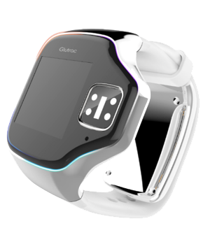

Joint program with Southern University of Science and Technology (SUSTech)
hx.liang (at) siat (dot) ac (dot) cn
Biography
I am a Master Student jointly trained by the Shenzhen Institutes of Advanced Technology,
Chinese Academy of Sciences and Southern University of Science and Technology. I currently
work on causal discovery and AI4Science under the supervision of
Prof. Hao Zhang.
I received my B.Eng. in Information Engineering from Guangdong University of Technology.
During my undergraduate study, I worked with
Prof. Wing-Kuen Ling
and developed research and engineering experience across biomedical signal processing,
embedded systems, robot vision, UAV control, and sensor fusion.
Selected Projects

2022.12 - 2025.03 · Research Member
Non-invasive Blood Pressure Estimation Algorithm
Developed cascaded neural-network models to improve PPG-based blood pressure
estimation accuracy, supported by the Guangdong Climbing Program
(PDJH2024A135).
Designed parameterized fractional-order derivative operators for PPG feature extraction.
Reduced computational complexity through Fourier transform-based optimization.
Completed hardware selection and PCB design for prototype development.
Runner-up in Chuangke China Innovation Competition; Invention Patent ZL202210694681.0.
2021.11 - 2023.12 · Team Leader & Vision Algorithm Lead
Wheeled Robotic Arm System
Built a 6-DOF wheeled robotic arm system for mobile target grasping and
transportation in an automated storage scenario.
Improved color recognition with histogram equalization.
Integrated Kalman filtering for IMU and encoder data fusion.
Optimized PID controllers for robotic-arm motion precision.
National Second Prize in China Robotics Competition; Utility Model Patent ZL202322498437.X.
2023.05 - 2023.08 · Team Leader & Control Algorithm Lead
UAV Fire Rescue System
Designed a quadcopter UAV system for collaborative fire rescue, combining aerial
reconnaissance, target localization, material delivery, and autonomous ground-vehicle navigation.
Developed ROS-based flight-control and sensor-fusion algorithms.
Fused IMU and ESC data through Kalman filtering.
Designed cascade PID controllers for UAV and ground-vehicle navigation.
Second Prize in Guangdong Electronic Design Competition; excellent completion of a national innovation project.
2023.05 - 2023.08 · Team Leader & Control Algorithm Lead
Autonomous Material Transport Robot
Designed an unmanned material-transport robot that autonomously follows a
prescribed route and obeys traffic-light rules.
Developed ROS-based robot control algorithms.
Used Kalman filtering to fuse IMU and ESC data.
Implemented visual perception for road-condition recognition.
Excellent completion of a provincial innovation project, S202311845100.
Awards
Outstanding Graduate, Guangdong University of Technology.
Top Ten Outstanding Graduate, School of Information Engineering, Guangdong University of Technology.
Second Prize, China Robotics Competition National Finals, Nov. 25, 2022.
Second Prize, China Robotics Competition National Finals, Oct. 13, 2023.
First Prize, “Maker China” National Innovation and Entrepreneurship Competition, Sept. 1, 2023.
Excellent Completion Project, National College Student Innovation and Entrepreneurship Training Program, Jun. 6, 2024.
Good Completion Project, Provincial College Student Innovation and Entrepreneurship Training Program, Jun. 5, 2024.
Silver Award, China International “Internet+” College Students Innovation and Entrepreneurship Competition, Guangdong Provincial Division, Sept. 1, 2023.
Bronze Award, China International “Internet+” College Students Innovation and Entrepreneurship Competition, Guangdong Provincial Division, Sept. 1, 2023.
Second Prize, National Undergraduate Electronics Design Contest, Guangdong Provincial Division, Nov. 1, 2023.
Second Prize, Guangdong Undergraduate Electronics Design Contest, Sept. 1, 2022.
Key Project, Guangdong Science and Technology Innovation Strategy Special Fund, Feb. 18, 2024.
First Prize, Comprehensive Laboratory Skills Competition, 3D Printing Category, Jul. 1, 2023.
First Prize, Comprehensive Laboratory Skills Competition, Electronic Soldering and Debugging Category, Jul. 1, 2022.
First Prize, Jieli Cup Electronic Design Competition, May 27, 2023.
Best Creativity Award, Jieli Cup, May 27, 2023.
Merit Award, Energy Conservation and Emission Reduction Social Practice and Technology Competition, Apr. 1, 2022.
Second Prize, Tianbo Cup Innovation Design Competition, Apr. 1, 2024.
Invention Patent Granted, blood pressure prediction method and system based on multi-channel Gramian angular fields, Oct. 4, 2022.
Utility Model Patent Granted, intelligent handling robot, Apr. 2, 2024.
Utility Model Patent Accepted, IoT-based aquaculture water quality management system, Mar. 13, 2023.
Languages
Chinese: Native Language.
Cantonese: Native Language. I rarely use it in daily communication now, so my spoken fluency has declined a little, but I can still fully understand what I hear, and that does not change the fact that it is my favorite language.
English: Basic proficiency.
Hlai language: Native Language. It is a relatively rare language, used by people from the place where I was born.
Acknowledgements
Thanks to Wenpu Li
for the homepage template, and for his guidance on my development direction during my undergraduate years.